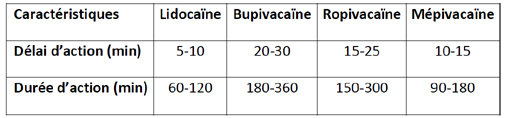
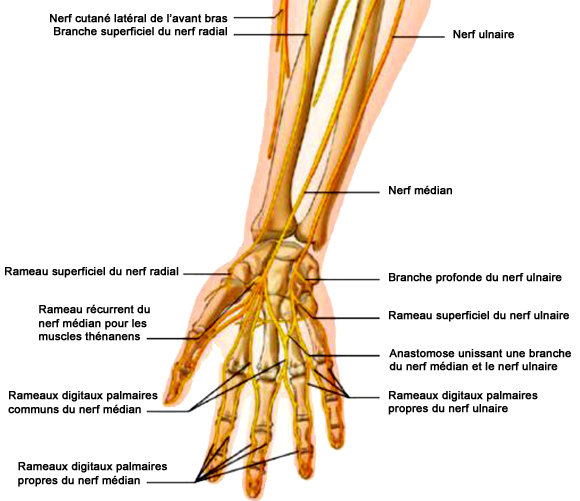
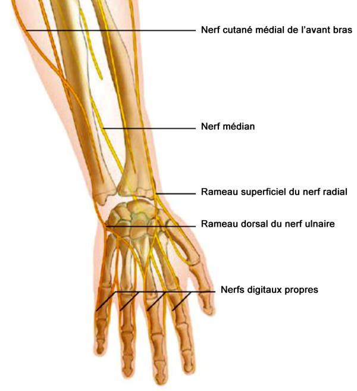

Bienvenue Sur Medical Education
Blocs périphériques de la main
AdulteSpécialité : traumatologie /
Points importants
- L'ALR consiste à bloquer la transmission de l'influx nerveux en injectant un AL à proximité des troncs nerveux innervant un territoire concerné
-
Il faut distinguer les blocs plexiques des blocs tronculaires :
- les blocs plexiques intéressent l'ensemble des nerfs d'un membre (non indiqués dans l’urgence)
- les blocs tronculaires se focalisent sur l’anesthésie d’un nerf périphérique
- Indiqués seulement pour des monotraumatismes
- Ces blocs permettent une analgésie rapide, sans effets secondaires systémiques
- Importance de l’entraînement à la pratique de ces techniques
- L’adrénaline ne doit pas être un additif aux blocs des extrémités (par son effet vasoconstricteur. Risque d’ischémie)
Indications
-
Blocs distaux :
- le membre supérieur au tiers inférieur de l’avant-bras
- Exploration et parage de plaies
- Extraction de corps étrangers
- Incision d'abcès ou de panaris
- Excision partielle ou repositionnement d'ongles
- Réduction de luxation inter-phalangienne
-
Indications anatomiques spécifiques :
- bloc du nerf médian : anesthésie de la face palmaire externe de la main à partir de la ligne médiane du 4e doigt
- bloc du nerf radial : anesthésie de la moitié externe de la face dorsale de la main et de la face dorsale du pouce
- bloc du nerf ulnaire : anesthésie de la moitié interne de la face dorsale de la main et de la face dorsale du 5e doigt
- bloc de la gaine des fléchisseurs (bloc intrathécal) : anesthésie des 2e, 3e et 4e doigts
Contre-indications
- Foyer infectieux local
- Traitement anticoagulant et troubles de l’hémostase (contre-indications relatives)
- Hématome modifiant les repères anatomiques
- Agitation
- Patient inconscient
- Refus du patient (ou des parents si patient mineur)
- Praticien insuffisamment compétent
-
Contre-indications dues aux AL :
- allergie aux AL
- porphyries
- troubles de la conduction intracardiaque
- épilepsie non contrôlée
- ATCD d'hyperthermie maligne
- Détresse vitale
Présentation du matériel
-
Anesthésiques locaux non adrénalinés (lidocaïne à 1% ou 2%, naropéine à 2 mg/mL ou 7,5 mg/mL, carbocaïne à 20 mg/mL)
-  fichier_905 Tableau Caractéristique des AL de type amino-amides
- pas de différence notable entre la lidocaïne et la carbocaïne si ce n'est une infiltration moins douloureuse avec cette dernière
- la naropéine a une durée d'action (6-8 heures) beaucoup plus longue que la lidocaïne (1-2 heures) et a moins d'effets secondaires
-
Aiguilles de 21 à 23 G, de longueur adaptée selon le siège anatomique du nerf :
- les aiguilles standard à biseau long (30°) peuvent entraîner une agressivité sur les structures vasculo-nerveuses
- les aiguilles à biseau court (45°) permettent de mieux sentir le passage des plans pour les blocs profonds
- Seringues (5 mL)
- Antiseptique
- Compresses stériles
- Gants
Description de la technique
ANATOMIE
Générale
-
Le membre supérieur est innervé par les nerfs issus du plexus brachial. Ce dernier est habituellement formé par les branches antérieures des 4 derniers nerfs cervicaux (C5 à C8) et du premier nerf thoracique T1. Il se divise en 3 troncs primaires :
- tronc primaire supérieur : C5-C6
- tronc primaire moyen : C7
- tronc primaire inférieur : C8-T1
-
Chaque tronc se partage en une division antérieure et postérieure qui s'unissent en 3 faisceaux latéral, postérieur et médial selon leur rapport avec l'artère axillaire. Ces faisceaux donnent naissance à 5 branches terminales :
- le nerf musculo-cutané
- le nerf axillaire
- le nerf radial
- le nerf médian
- le nerf ulnaire
Spécifique
-
Anatomie du nerf médian :
- 3-4 cm au-dessus du poignet, le nerf médian pénètre sous le retinaculum des fléchisseurs dans le canal carpien. Il se divise en plusieurs branches au niveau de la loge moyenne de la main
-
il est mixte :
- sensitif : face palmaire externe à partir de la ligne médiane du 4e doigt, faces dorsales des 2 dernières phalanges des 2e, 3e doigts et moitié externe du 4e doigt
- moteur : flexion et pronation de la main et pince pouce-index
-
Anatomie du nerf radial :
- fait suite au tronc postérieur du plexus brachial
- descend du coude à partir de la gouttière bicipitale externe
- il se divise en deux branches superficielle et profonde. La branche superficielle chemine sur le bord latéral (ou radial) de l'avant bras, perfore l'aponévrose environ au tiers inférieur de l'avant bras pour devenir sous-cutanée
-
cette branche sensitive donne 3 rameaux superficiels (externe, interne et moyen) en regard du bord externe de l'extrémité inférieure du radius ; elle innerve :
- la moitié externe de la face dorsale de la main jusqu'à l'extrémité du pouce
- la face dorsale jusqu'aux 2 premières phalanges pour le 2e et la moitié externe du 3e doigt
-
Anatomie du nerf ulnaire :
- le nerf ulnaire est formé de fibres issues de C8 et T1. Il se détache du tronc secondaire antéro-interne du plexus brachial
- il chemine sous le tendon du cubital antérieur et à proximité de l'artère ulnaire
- il se divise en 2 branches terminales : une dorsale sensitive et une palmaire mixte
-
le nerf ulnaire innerve sur le plan sensitif :
- la moitié interne de la face dorsale de la main
- le 5e doigt
- la moitié interne du 4e doigt
-
Anatomie des nerfs digitaux :
- chaque doigt est innervé par 4 branches nerveuses : 2 dorsales et 2 palmaires
- les nerfs collatéraux palmaires sont les branches terminales des nerfs médian et ulnaire
- les nerfs collatéraux dorsaux sont les branches terminales des nerfs radial et ulnaire
- les nerfs collatéraux palmaires sont accompagnés par des vaisseaux collatéraux, formant des pédicules vasculo-nerveux qui cheminent de part et d'autre de la gaine des fléchisseurs
- la gaine des tendons fléchisseurs enveloppe les tendons des muscles fléchisseurs des 2e, 3e et 4e doigts. Elle remonte à 1 cm au-dessus de l'articulation métacarpo-phalangienne
- pour le pouce, la gaine est commune avec celle du muscle long fléchisseur. Elle va jusqu'au ligament annulaire pour le 5e doigt
- les nerfs collatéraux palmaires innervent la face palmaire de tous les doigts et la face dorsale des 2e et 3e phalanges
 fichier_906 Innervation de la main (face antérieure)
 fichier_907 Innervation de la main (face postérieure)
fichier_908 Sensibilité de la main
TECHNIQUE
- Badigeonner la zone de ponction avec la solution antiseptique
- 2 à 3 mL de lidocaïne non adrénalinée à l% suffisent pour chaque nerf
BLOCS AU NIVEAU DU POIGNET
Bloc du nerf médian
- Le membre supérieur est placé en supination et le poignet en extension
-
Repères cutanés :
- pli de flexion du poignet
- tendons fléchisseurs des muscles palmaires (tendons du fléchisseur radial du carpe et du long palmaire, facilement repérés en demandant au patient de fléchir le poignet contre résistance)
- L'aiguille est introduite perpendiculairement entre ces deux tendons, à 2 cm au-dessus du pli de flexion du poignet
- C'est un nerf sous aponévrotique. Il faudra donc enfoncer l'aiguille jusque sous l'aponévrose, en allant buter jusqu'à l'os (radius), puis reculer d'un millimètre
- Après test d'aspiration, injecter 2 à 3 mL d'AL. On voit apparaître une voussure correspondant au comblement du sillon et traduisant une bonne diffusion de l'AL
fichier_896 fichier_896 - - - Bloc du nerf médian
Bloc du nerf radial
- Le membre supérieur est placé en position neutre, le pouce en abduction et extension
-
Le repère essentiel est la tabatière anatomique, limitée :
- en dedans par les tendons du long abducteur du pouce et du court extenseur du pouce
- en dehors par le long extenseur du pouce
- Les tendons sont mis en évidence par une extension forcée du pouce
- Une ligne transversale de 3 cm est tracée à l'angle supérieur de la tabatière anatomique
- Introduire l'aiguille en sous-cutané, le plus loin possible sur la face postérieure. Eviter la veine radiale
- 3 mL d'AL sont infiltrés en sous-cutané sur cette ligne. L'injection de l'AL produit une voussure
fichier_897 fichier_897 - - - Bloc du nerf radial
Bloc du nerf ulnaire
- Le membre supérieur est en supination avec le poignet en extension
-
Repères cutanés :
- pli de flexion du poignet
- tendon du cubital antérieur sur le bord antéro-médial du poignet (mis en évidence en faisant opposition à une adduction de la main tendue du patient)
- Le point de ponction se situe 2-3 cm au-dessus du pli de flexion, au bord médial du tendon
- L'aiguille est introduite perpendiculairement au plan cutané, sous le tendon. Elle est enfoncée d'environ 3 mm
- Après test d'aspiration, injecter 3 mL d'AL
fichier_898 fichier_898 - - - Bloc du nerf ulnaire
BLOCS AU NIVEAU DES DOIGTS
Blocs digitaux (annulaires)
- Piquer à la base du doigt à anesthésier
- Enfoncer l'aiguille d'environ 2 mm perpendiculairement au plan cutané, latéralement à la phalange, au niveau de chacun des 4 points de ponction antérieurs et postérieurs
- Aspirer puis injecter environ 2 mL d'AL
fichier_899 fichier_899 - - - Bloc digital de la main
Bloc intra-thécal
- Le bloc de la gaine des fléchisseurs concerne les 2e, 3e et 4e doigts
- Il permet d'anesthésier les nerfs collatéraux palmaires
- Il supplante les blocs digitaux par infiltration des nerfs collatéraux qui sont douloureux et peuvent être responsables d'ischémie par compression ou spasme artériolaire
- L'aiguille est introduite au niveau du pli de flexion de l'articulation métacarpo-phalangienne, en regard du tendon fléchisseur, dans la région du coussinet palmaire. Elle y est enfoncée perpendiculairement au coussinet jusqu'à sentir une petite résistance correspondant au tendon fléchisseur profond du doigt
- Immobiliser alors l'aiguille
- Les mouvements de flexion passive du doigt entraînent la verticalisation de l'aiguille, ce qui atteste sa bonne position dans la gaine
- Faire un test d'asspiration puis injecter lentement 4 mL d’AL
-
NB :
- l'apparition d'une résistance signe l'injection dans le tendon. Il faut alors retirer l'aiguille de 1 à 2 mm
- la diffusion distale de l'AL est facilitée par une compression au niveau de la tête du métacarpien
- au niveau du 4e doigt, la gaine intrathécale communique avec celle du dernier doigt ; par le même repère cutané, l'injection de 6 à 8 mL d'AL permet l'anesthésie des 2 derniers doigts
fichier_900 fichier_900 - - - Bloc intra-thécal
Précautions d’emploi
- Nécessité du consentement éclairé du patient
- Obligation d’un examen clinique préalable global et surtout loco-régional, à la recherche de troubles sensitivo-moteurs, d’une lésion préexistante
- Installation du patient en décubitus afin de réduire le risque de survenue d'un malaise vagal
- Pose préalable d'une VVP
- Monitorage (scope, SpO2, PA)
- Matériel de réanimation prêt (aspiration, BAVU, oxygène, drogues)
- Asepsie rigoureuse
- Respecter les doses d'AL
- Répéter les tests d'aspiration durant l'injection d'AL
- Maintenir en permanence un contact verbal avec le patient
- Privilégier les aiguilles à biseau court
-
Arrêter immédiatement toute injection si :
- douleur
- reflux de sang lors d’une aspiration
- résistance inhabituelle en cours d'injection
- symptômes dus à la toxicité systémique des AL
- Ne réaliser qu’une seule injection (en cas d’échec après injection, ne pas renouveler la tentative)
- Immobiliser le membre après la réalisation du bloc
- Evaluer l’intensité douloureuse avant et après la réalisation de l'ALR
- Faire un examen neurologique avant et après le geste et le noter dans le dossier
-
Diminuer les doses d'AL si :
- âge extrême : chez le sujet âgé (demi-vie d'élimination plus longue), le nouveau-né et le nourrisson (taux d'orosomucoïde faible jusqu'à 9 mois)
-
grossesse :
- augmentation de l'absorption par majoration du débit cardiaque
- la progestérone augmente la sensibilité des neurones à l'action des AL
- le taux d'orosomucoïde est diminué
- insuffisances cardiaque, hépatique et rénale
Complications
-
Complications traumatiques entraînant des complications neurologiques (prévalence = 1 à 1,5%) allant de dysesthésies temporaires aux parésies définitives (privilégier les biseaux courts) :
- mécaniques par lésion directe du nerf (douleur violente)
- compression interne (injection dans la gaine) ou externe (hématome péri-neuronal) du nerf
- Complications infectieuses (importance de l’asepsie)
- Hématome
-
Toxicité systémique des AL (injection intra-vasculaire) :
-
neurologique :
- engourdissement ou paresthésies péribuccales
- goût métallique dans la bouche
- étourdissement ou vertiges
- acouphènes
- troubles de l'accommodation visuelle, diplopie
- désorientation temporo-spatiale
- dysarthrie
- convulsions généralisées
-
cardiovasculaire :
- arythmies (TV, torsades de pointes, bradycardie extrême)
- HoTA
- Arrêt cardiaque
- méthémoglobinémie
- porphyrie
-
neurologique :
- Syncope vagale (vertige, bradycardie, HoTA, nausées, pâleur, sueurs) secondaire à la douleur ou l’angoisse
-
Bloc du nerf médian :
- l'apparition de paresthésies sur le territoire du nerf médian peut entraîner une flexion brutale de l'avant-bras sur le bras et un risque de lésion par embrochage du nerf
-
Bloc du nerf radial :
- les complications concernent un risque modéré de paresthésies
-
Bloc du nerf ulnaire :
- il existe un risque de ponction de l'artère ulnaire et de plaies nerveuses
- ischémie des doigts dans les blocs digitaux
Surveillance
- Scope
- PA, FC, SpO2
Bibliographie
- Société Française d'Anesthésie et de Réanimation, Société francophone de médecine d'urgence, SAMU de France. Pratique des anesthésies locales et locorégionales par des médecins non spécialisés en anesthésie-réanimation dans le cadre des urgences. Paris : SFAR / Elsevier; 2004, 107p.
- A. Fève. Pratique des anesthésies locorégionales par les médecins urgentistes non anesthésistes-réanimateurs en situation d'urgence en Lorraine. Thèse de Doctorat en Médecine. Faculté de Médecine de Nancy. 2009
Auteur(s) : Luc EYROLLE, Anissa BELBACHIR